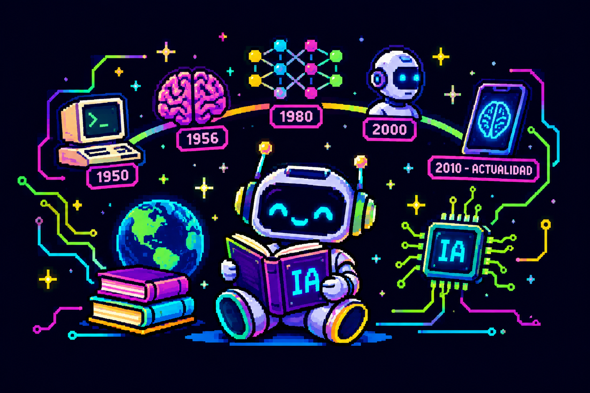

| 1.Según su capacidad (Nivel de evolución e inteligencia) | IA Estrecha o Débil (ANI - Artificial Narrow Intelligence): Es la única que existe y usamos en la actualidad. Está diseñada para realizar una tarea específica o un conjunto muy acotado de funciones de manera excelente, pero no tiene conciencia ni puede "pensar" fuera de su área. Por ejemplo sistentes de voz (Siri, Alexa), los algoritmos de recomendación de Netflix o Spotify, los filtros de spam y los sistemas de reconocimiento facial. l |
IA General o Fuerte (AGI - Artificial General Intelligence) : Es un nivel teórico de IA que equivaldría a la inteligencia humana. Sería capaz de aprender, razonar, planificar y resolver cualquier problema intelectual en diversos campos de la misma forma que lo haría una persona. Todavía no existe; es objeto de investigación científica. |
Superinteligencia Artificial (ASI - Artificial Superintelligence) : Un concepto hipotético en el que la IA superaría ampliamente las capacidades cognitivas, la creatividad y la toma de decisiones de toda la humanidad combinada. Es puramente teórica y futurista. |
| 2.Según su funcionalidad y arquitectura (Cómo procesan la información) | Máquinas reactivas: El tipo más básico. No tienen memoria ni capacidad de aprender de experiencias pasadas; solo responden a estímulos en el presente basándose en reglas fijas por ejemplo: Deep Blue, el ordenador de ajedrez de IBM que derrotó a Garry Kasparov calculando jugadas al momento sin recordar partidas anteriores. |
Teoría de la mente: Nivel en desarrollo que implicaría que la IA sea capaz de comprender las emociones, creencias, intenciones y necesidades de los seres humanos, adaptando su comportamiento a ellos de forma empática. |
Memoria limitada: Sistemas que pueden almacenar y utilizar datos e interacciones recientes durante un tiempo para tomar mejores decisiones. Es la base de casi toda la tecnología avanzada de hoy. Algunos ejemplos son los vehículos autónomos (que recuerdan la velocidad y posición de otros coches en la carretera durante un trayecto) y los modelos de lenguaje actuales. |
Autoconciencia: El peldaño más avanzado y estrictamente hipotético. Se refiere a máquinas que tendrían consciencia de su propia existencia, sentimientos y pensamientos propios. |
| 3. Según su tecnología de aprendizaje (Subtipos prácticos) | Machine Learning (Aprendizaje automático):Algoritmos que aprenden patrones a partir de grandes volúmenes de datos en lugar de ser programados explícitamente paso a paso. Supervisado: Aprende con datos etiquetados por humanos. No supervisado: Encuentra estructuras ocultas en datos sin clasificar. Por refuerzo: Aprende a base de prueba y error mediante un sistema de recompensas y castigos (muy usado en robótica y videojuegos). |
Deep Learning (Aprendizaje profundo):subtipo avanzado de Machine Learning basado en redes neuronales artificiales que imitan de forma muy simplificada las conexiones del cerebro humano. Permite procesar datos complejos como imágenes, audios y textos largos. |
IA Generativa:subtipo impulsado por Deep Learning capaz de crear contenido nuevo y original (textos, imágenes, código, música o vídeos) a partir de las instrucciones (prompts) que le da el usuario. |
| Ética en la IA: Estudio de los problemas morales y sociales derivados del uso de la IA. Ejemplo: La preocupación sobre el uso de IA en la vigilancia masiva y la privacidad. | ||
| IA en la medicina: Uso de la inteligencia artificial para apoyar en diagnósticos médicos, predicciones de enfermedades y tratamiento personalizado. Ejemplo: Herramientas de IA que analizan radiografías para detectar tumores o enfermedades pulmonares. | ||
| Ciberseguridad y IA: Uso de IA para mejorar la seguridad en línea mediante la detección de amenazas y la protección de datos. Ejemplo: Los sistemas de IA que detectan patrones de ataques informáticos y bloquean posibles intrusiones. | ||
| IA en Finanzas: Aplicación de IA en la predicción de mercados, la detección de fraudes y la gestión de riesgos. Ejemplo: Algoritmos que predicen movimientos del mercado de valores basándose en datos históricos. | ||
| IA en Educación: Uso de la IA para personalizar el aprendizaje y mejorar la experiencia educativa. Ejemplo: Plataformas de aprendizaje como Duolingo, que personalizan los ejercicios según el rendimiento del usuario. | ||
| IA en Marketing: Uso de IA para personalizar campañas publicitarias y mejorar la experiencia de compra del cliente. Ejemplo: Herramientas que analizan los comportamientos de compra para ofrecer anuncios personalizados. | ||
| IA en la Agricultura: Aplicación de IA en la predicción de cosechas, monitoreo de cultivos y optimización de recursos. Ejemplo: Drones equipados con IA que analizan el estado de los cultivos y detectan plagas. | ||
| IA en Logística: Uso de IA para optimizar la gestión de inventarios y la distribución de productos. Ejemplo: Sistemas que gestionan el almacén de Amazon y planifican las rutas de entrega. | ||
| IA en el Arte: Aplicación de la IA para crear música, pinturas, literatura, etc. Ejemplo: Programas de IA que componen música basada en estilos de compositores famosos. | ||
| IA en el Entretenimiento: Uso de IA para crear contenido dinámico y personalizado para los usuarios. Ejemplo: Algoritmos de IA que crean música o guiones basados en el análisis de gustos del público. | ||
| Inteligencia Artificial en Videojuegos: IA que permite que los personajes no jugables (NPC) reaccionen y tomen decisiones autónomamente. Ejemplo: NPCs en videojuegos de rol que toman decisiones basadas en las acciones del jugador. |
HISTORIA DE LA INTELIGENCIA ARTIFICIAL

La Era de los Algoritmos y el Primer "Invierno" (1960 - 1980)
El Renacimiento Silencioso y los Sistemas Expertos (1980 - 1995)